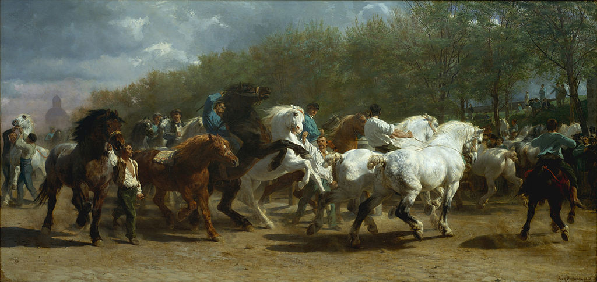

<head>
<meta charset="UTF-8" />
<meta name="keywords" content="drawing, painting" />
<meta name="description" content="drawings by Sunjy" />
<title>Sunjy</title>
<link rel="shortcut icon" type="image/x-icon" href="../../mImages/mCommon/favicon.ico" media="screen" />
<link rel="stylesheet" type="text/css" href="../../mCsses/mCommon/mCssA.css" />
<link rel="stylesheet" type="text/css" href="../../mCsses/mCommon/mCssB.css" />
<link rel="stylesheet" type="text/css" href="../../mCsses/mCommon/mCssC.css" />
<link rel="stylesheet" type="text/css" href="../../mCsses/mCommon/mCssD.css" />
<link rel="stylesheet" type="text/css" href="../../mCsses/mContent/mCssA.css" />
<link rel="stylesheet" type="text/css" href="../../mCsses/mContent/mCssB.css" />
<link rel="stylesheet" type="text/css" href="../../mCsses/mContent/mCssC.css" />
<link rel="stylesheet" type="text/css" href="../../mCsses/mContent/mCssD.css" />
</head>
<script type="text/javascript" src="../../mScripts/mContent/mContentAA.js" /></script>
<script type="text/javascript" src="../../mScripts/mContent/mContentAB.js" /></script>
<script type="text/javascript" src="../../mScripts/mContent/mContentAC.js" /></script>
<script type="text/javascript" src="../../mScripts/mContent/mContentAD.js" /></script>
<script type="text/javascript"></script> 
<script type="text/javascript">
document.write('<div class="mImgAbsolute"></div>');
/*
document.write('<p class="mFontSizeBColor" />From a white paper...</p>');
document.write('<table class="center"><tr><td>');
document.write('');
document.write('</td></tr></table>');
*/
</script>


<script type="text/javascript">
document.write('<p class="mFontSizeBColor" />The Horse Fair</p>');
document.write('<p class="mFontSizeSColor" />“The Horse Fair” by Rosa Bonheur depicts dealers selling horses at the horse market held on the tree-lined Boulevard de l’Hôpital, Paris. Bonheur used a series of sketches of draught horses, which she had made at the Paris horse market.<br><br>She attended the market twice weekly for a year and a half for her work. In addition to studies at the Paris horse market, she also modeled her animals on those from the Paris Omnibus Company, which were still horse-powered.<br><br>As a realist painter, she broke from tradition in depicting the horse eye as it is, and not using anthropomorphism for emotional effect.<br><br>In preparation for her research for this painting, Rosa Bonheur sought permission from the Paris police to dress as a man, to avoid drawing attention to herself.<br><br>She had earlier studied at a Paris slaughterhouse in 1845, a typical activity for an animal painter that she was the first woman to engage in, and had experienced harassment as a visible woman.<br><br>Bonheur routinely wore masculine clothes at home and in the country. She is quoted as saying:<br><br>“I am a painter. I have earned my living honestly. My private life is nobody’s concern.” <br><br>Among the influences on Bonheur’s work are sculptures from Ancient Greece. Bonheur described this painting as her own Parthenon Frieze.<br><br>This large-scale painting, with its realistic style extending eight feet tall by sixteen feet broad and energetic movement, is proto-cinematic in its effect.<br></p>');
document.write('<table class="center" /><tr><td>');
document.write('<br>She attended the market twice weekly for a year and a half for her work. In addition to studies at the Paris horse market, she also modeled her animals on those from the Paris Omnibus Company, which were still horse-powered.<br><br>As a realist painter, she broke from tradition in depicting the horse eye as it is, and not using anthropomorphism for emotional effect.<br><br>In preparation for her research for this painting, Rosa Bonheur sought permission from the Paris police to dress as a man, to avoid drawing attention to herself.<br><br>She had earlier studied at a Paris slaughterhouse in 1845, a typical activity for an animal painter that she was the first woman to engage in, and had experienced harassment as a visible woman.<br><br>Bonheur routinely wore masculine clothes at home and in the country. She is quoted as saying:<br><br>“I am a painter. I have earned my living honestly. My private life is nobody’s concern.” <br><br>Among the influences on Bonheur’s work are sculptures from Ancient Greece. Bonheur described this painting as her own Parthenon Frieze.<br><br>This large-scale painting, with its realistic style extending eight feet tall by sixteen feet broad and energetic movement, is proto-cinematic in its effect.<br>" />');
document.write('</td></tr></table>');
</script>


